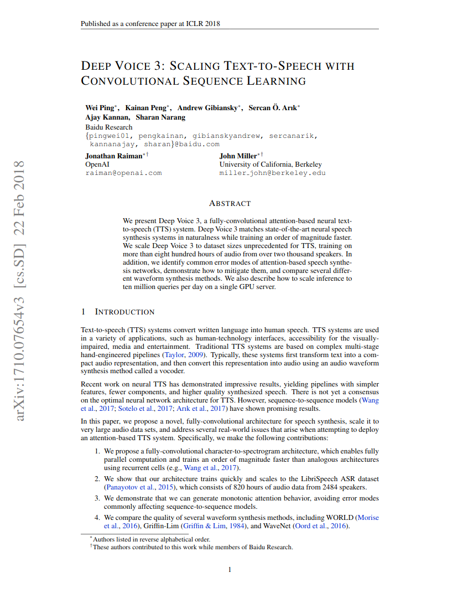
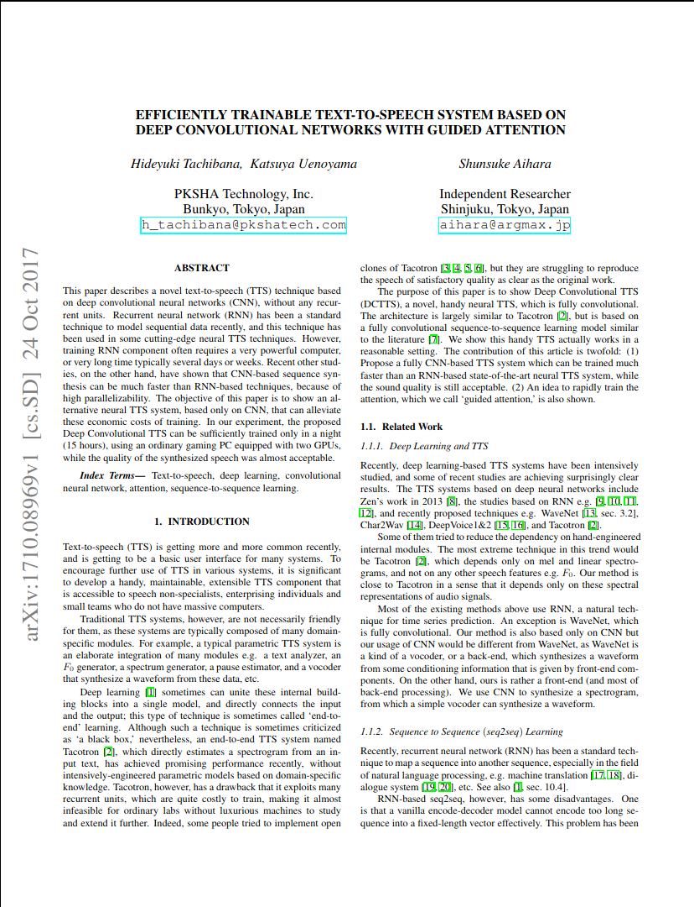
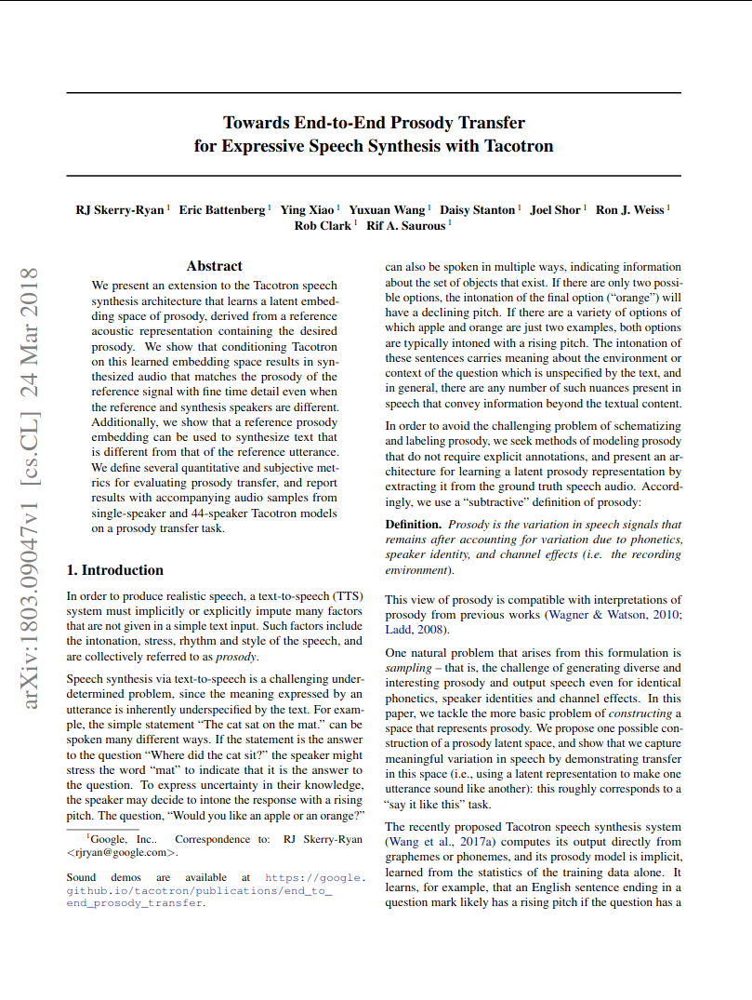
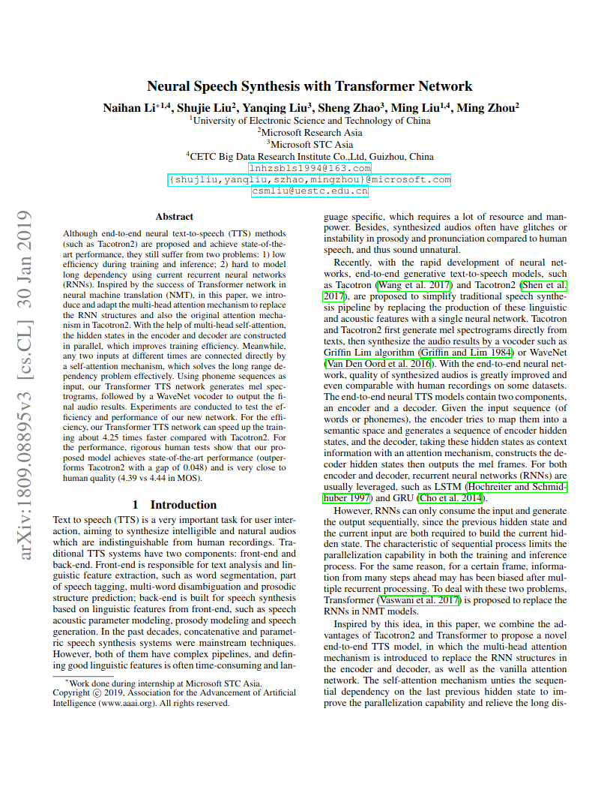

|
|
|
|
|
|
|
|
|  | Wei Ping, Kainan Peng, Andrew Gibiansky, Sercan O. Arik, Ajay Kannan,
Sharan Narang, Jonathan Raiman, John Miller Deep Voice 3: Scaling Text-to-Speech with Convolutional Sequence Learning. On ArXiv, 2018 . |
|  | Hideyuki Tachibana, Katsuya Uenoyama, Shunsuke Aihara Efficiently Trainable Text-to-Speech System Based on Deep Convolutional Networks with Guided Attention On ArXiv, 2017 . |
|  | RJ Skerry-Ryan, Eric Battenberg, Ying Xiao, Yuxuan Wang, Daisy Stanton,
Joel Shor, Ron J. Weiss, Rob Clark, Rif A. Saurous Towards End-to-End Prosody Transfer for Expressive Speech Synthesis with Tacotron On ArXiv, 2018. |
|  | Naihan Li, Shujie Liu, Yanqing Liu, Sheng Zhao, Ming Liu, Ming Zhou Neural Speech Synthesis with Transformer Network. On ArXiv, 2019. |
| Reference Text | Deep Voice 3 - Female | Deep Voice 3 - Male | Output-3 | |
|---|---|---|---|---|
| Let's learn about matrices. |
||||
| So what is a,What do I mean when I say matrices? | ||||
| Well, matrices is just the plural for matrix, which is probably a word you're familiar with more because of Hollywood than because of mathematics. | ||||
| So what is a matrix? | ||||
| Well, it's actually a pretty simple idea. | ||||
| It's just a table of numbers, that's all a matrix is. | ||||
| So let me draw matrix for you. | ||||
| I don't like that toothpaste-colored blue, so let me use another color. | ||||
| So this is an example of a matrix. | ||||
| I'm going to pick some random numbers out: 5, 1, 2, 3, 0, minus 5. |